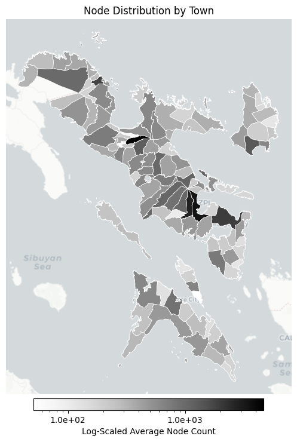

import osimport warningsimport contextily as cximport geopandas as gpdimport igraph as igimport matplotlib.pyplot as pltimport networkx as nximport numpy as npimport osmnx as oximport pandas as pdfrom matplotlib.axes import Axesfrom matplotlib.colors import LogNormfrom matplotlib.lines import Line2Dfrom matplotlib.ticker import FuncFormatter, LogLocatorwarnings.filterwarnings("ignore")
_, ax = plt.subplots(figsize=(8, 8))plot_choropleth( ax=ax, gdf=gdf_metrics, column="node_count", title="Node Distribution by Town", cmap="Greys", filename="node_count_map.png",)

Show code
def networkx_to_igraph(nx_graph: nx.Graph) -> ig.Graph: nx_nodes =list(nx_graph.nodes) node_index = {node: idx for idx, node inenumerate(nx_nodes)} ig_edges = [(node_index[u], node_index[v]) for u, v in nx_graph.edges()] graph = ig.Graph(edges=ig_edges, directed=False) graph.vs["name"] = [str(n) for n in nx_nodes]return graph, list(node_index.keys())graph_ig, node_index = networkx_to_igraph(GRAPH_TRANSPORT)